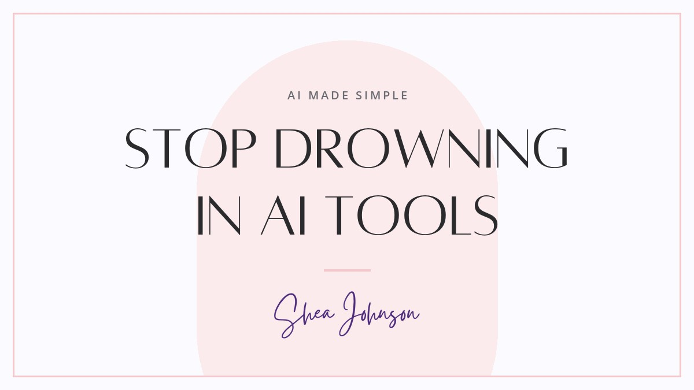

I’ve been using AI tools for over two years now.
And if I started using AI in my business today?
Here’s exactly where I’d begin.
First…
I would use Venturekit.ai to generate a business plan (or several).
Why several?
Because sometimes the best ideas come from comparing different approaches.
Next…
I would use an AI assistant to make that business plan actionable.
A plan sitting in a document doesn’t do much.
But a plan broken down into steps you can actually execute?
That changes everything.
Then…
I would use Perplexity.ai to do any research that I need along the way.
Questions will come up.
You’ll need answers fast.
This tool becomes your research assistant.
Here’s the thing…
These are all my go-to AI tools.
It’s like my toolkit.
My favorite tools that I rotate and use for a majority of my work.
And of course, there are plenty of other AI tools that I like to use for their special reasons.
But if I were to start anywhere?
These are the ones that I would start with.
Want to see what using these tools actually looks like?
I taught a workshop for SCORE.org where I walk you through using AI tools for your business for the first time.
You can watch the full recording here:https://youtu.be/pHLl5Dhp6mc?si=56JcxcD2rnvg0sg6
It’s my version of AI 101 but for business owners.
But that’s not all…
I’m also putting out very beginner-friendly tutorials and walkthroughs on YouTube.
You can find all my latest content and resources at:
Here’s what most people get wrong though…
They watch the videos.
They understand the concepts.
And then they try to implement… and realize they have no system.
No organization.
No structure to actually make this work in their business.
That’s where my digital workbooks come in.
I’ve created complete implementation systems specifically for entrepreneurs who are done learning and ready to DO.
These aren’t just templates.
They’re the exact systems I use in my own business.
The same ones that helped me:
- Organize my entire business in one place
- Cut my admin time in half
- Gather my loan documents for my underwriter in 2 weeks (instead of 4)
Disclosure: This post contains affiliate links. If you click and make a purchase, I may earn a commission at no extra cost to you. Thank you for supporting my content!
Check them out in my shop: mssheajohnson.com/shop
If you’re brand new to AI and still wondering “what this even is?”:
👉 Download my free beginner guide — Learn what AI is and how it shows up in different industries
If you understand AI and want to actually use these tools:
👉 Watch my SCORE workshop — See me use AI tools live
If you’re ready to implement and need a system:
👉 Grab a workbook — Get the organizational foundation that makes AI actually work in your business
Stop watching from the sidelines.
Pick your starting point above.
Take one action today.
Then come back and tell me what happened.
You’ve got this.